1474
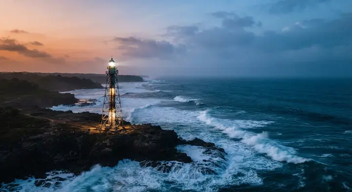
Le Cap Lopez
Le navigateur portugais Lopo Gonçalves double la pointe nord de l'île, qui portera son nom.
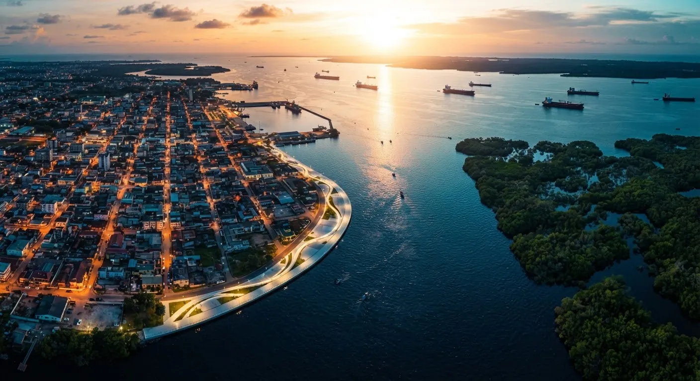
Entre océan Atlantique et delta de l'Ogooué, une cité insulaire au caractère unique, moteur de l'économie gabonaise.
Bâtie sur les sables de l'Île Mandji, Port-Gentil conjugue une vitalité industrielle hors norme et la douceur de vivre d'une ville océane.
Chef-lieu de la province de l'Ogooué-Maritime, la ville est accessible par voie maritime, aérienne et, depuis peu, par la route. Son port, ses industries et ses habitants en font la deuxième ville du Gabon.

Le navigateur portugais Lopo Gonçalves double la pointe nord de l'île, qui portera son nom.
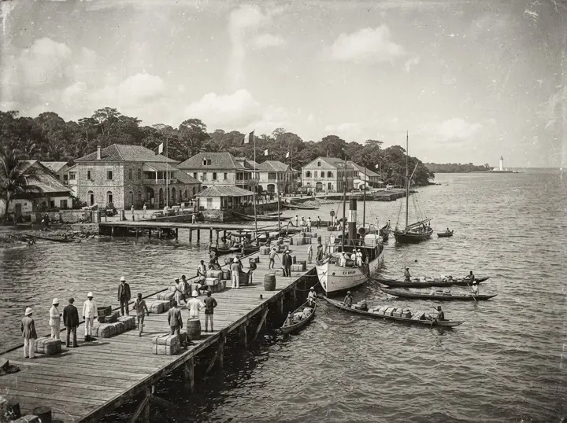
L'île devient un lieu d'échanges commerciaux entre les peuples de la côte et les navires de passage.
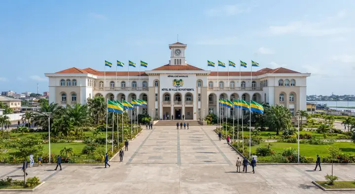
Le poste administratif prend le nom d'Émile Gentil et se développe autour de sa rade naturelle.
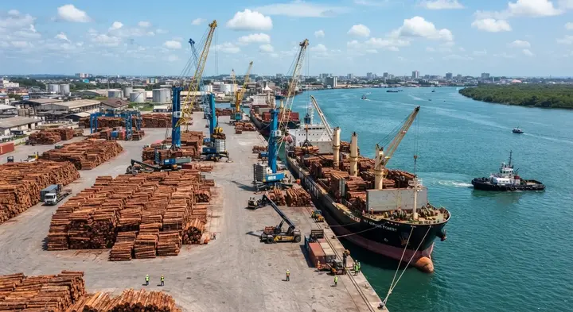
Le bois flotté sur l'Ogooué fait de Port-Gentil la capitale mondiale du contreplaqué d'okoumé.
La découverte du pétrole à Ozouri transforme durablement la ville et l'économie du pays.
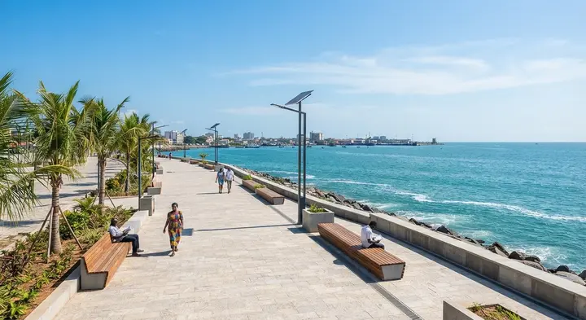
Diversification, économie bleue, écotourisme : Port-Gentil prépare l'après-pétrole.
Chronologie à valider avec le service des archives
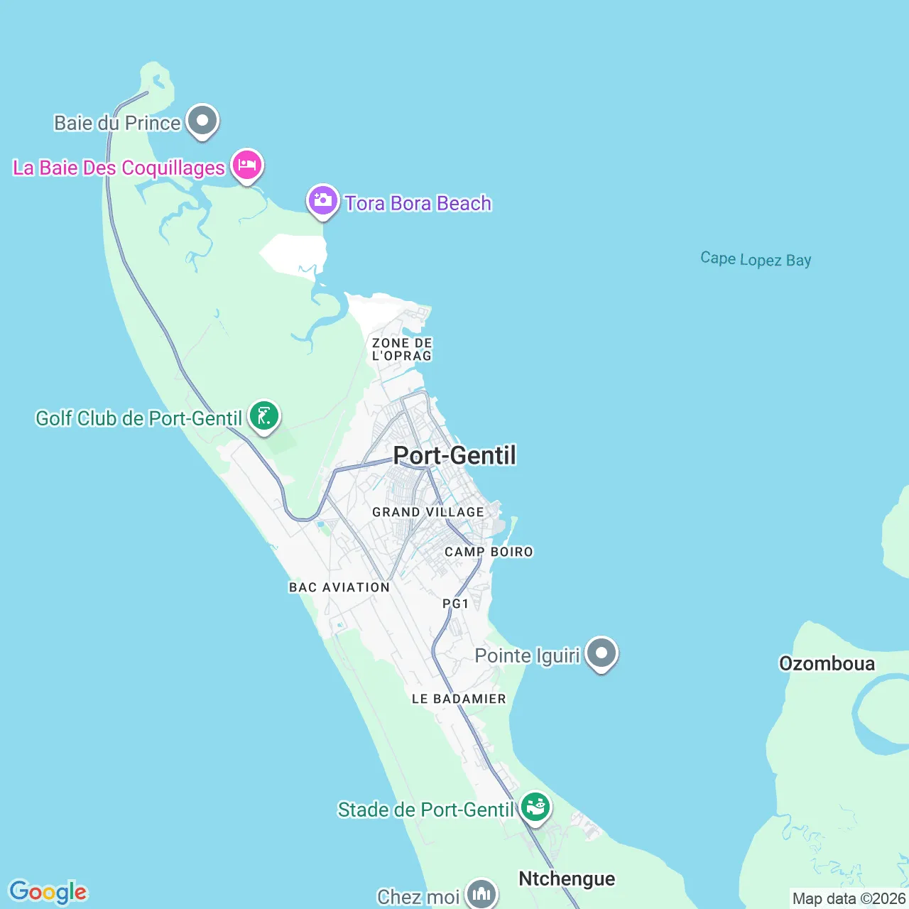
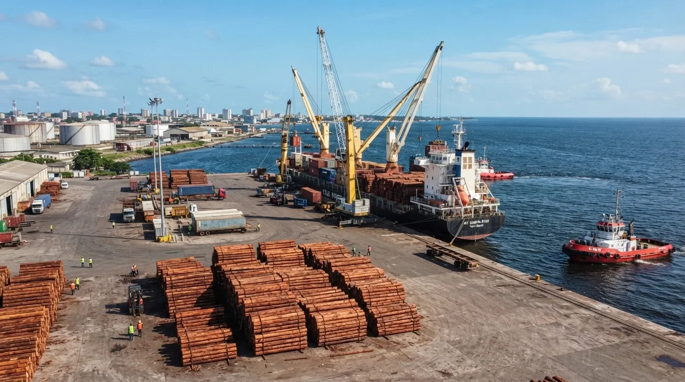
Énergie & logistiqueTerminal pétrolier, raffinerie et activités portuaires : l'essentiel des exportations du pays transite par l'île.
ville du pays par sa population et son poids économique
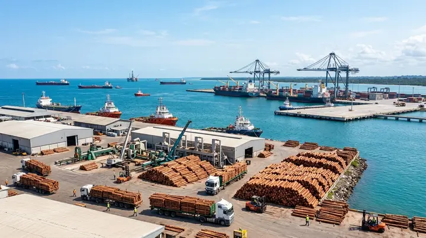
Transformation locale et exportation.

Pêche artisanale et halle à marée.
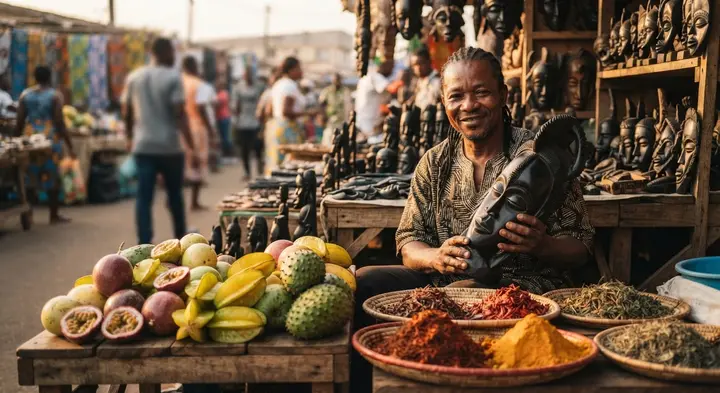
Marchés, services et artisanat.
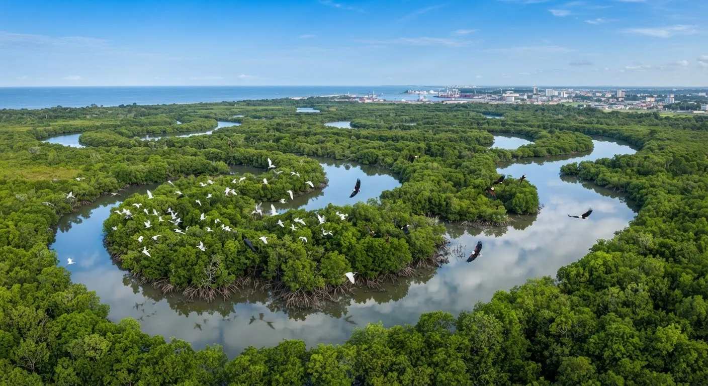
Mangroves, plages et lagunes : un potentiel touristique à développer durablement.
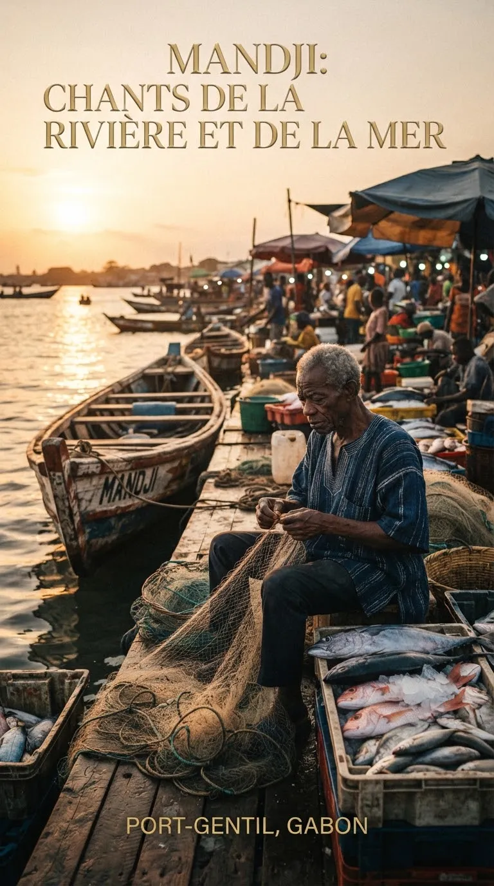
Poissons braisés, crevettes de la rade, feuilles de manioc : une cuisine généreuse tournée vers la mer.
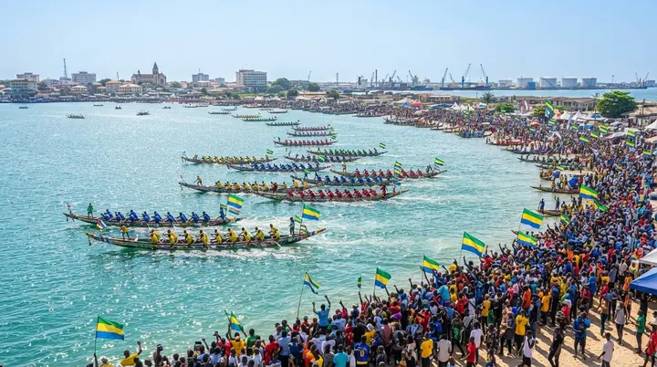
Régates de pirogues, festivals et métissage culturel rythment la vie de la cité tout au long de l'année.
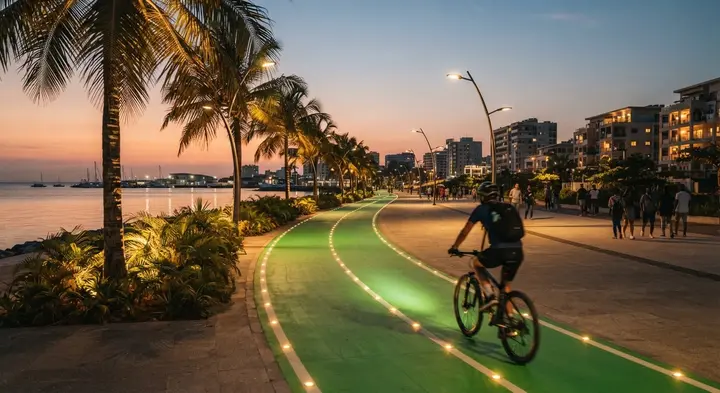
Front de mer, plages, sports nautiques : la ville se vit dehors, du lever au coucher du soleil.
« Ici, on travaille dur mais on sait profiter de l'océan. Port-Gentil, c'est une ville où l'on se sent chez soi, quel que soit l'endroit d'où l'on vient. »Témoignage d'habitante — exemple à remplacer
À la pointe nord de l'île, face à l'Atlantique.
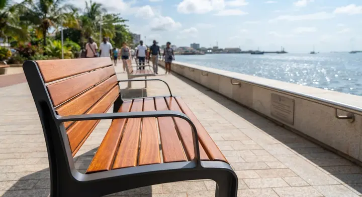
Couchers de soleil spectaculaires sur l'océan.
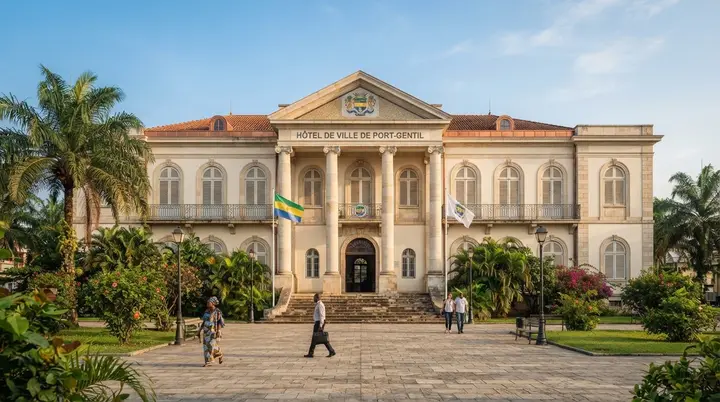
L'Hôtel de Ville et son esplanade civique.
Couleurs, saveurs et rencontres.
À explorer en pirogue avec un guide.
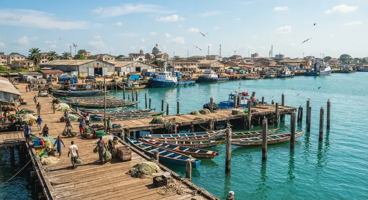
Le spectacle permanent du port.